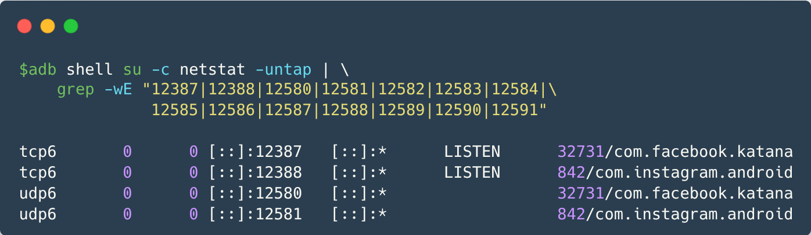

Disclosure: Covert Web-to-App Tracking via Localhost on Android
We disclose a novel tracking method by Meta and Yandex potentially affecting billions of Android users. We found that native Android apps—including Facebook, Instagram, and several Yandex apps including Maps and Browser—silently listen on fixed local ports for tracking purposes.
These native Android apps receive browsers' metadata, cookies and commands from the Meta Pixel and Yandex Metrica scripts embedded on thousands of web sites. These JavaScripts load on users' mobile browsers and silently connect with native apps running on the same device through localhost sockets. As native apps access programatically device identifiers like the Android Advertising ID (AAID) or handle user identities as in the case of Meta apps, this method effectively allows these organizations to link mobile browsing sessions and web cookies to user identities, hence de-anonymizing users' visiting sites embedding their scripts.
This web-to-app ID sharing method bypasses typical privacy protections such as clearing cookies, Incognito Mode and Android's permission controls. Worse, it opens the door for potentially malicious apps eavesdropping on users’ web activity.
How does this work?
While there are subtle differences in the way Meta and Yandex bridge web and mobile contexts and identifiers, both of them essentially misuse the unvetted access to localhost sockets. The Android OS allows any installed app with the INTERNET permission to open a listening socket on the loopback interface (127.0.0.1). Browsers running on the same device also access this interface without user consent or platform mediation. This allows JavaScript embedded on web pages to communicate with native Android apps and share identifiers and browsing habits, bridging ephemeral web identifiers to long-lived mobile app IDs using standard Web APIs.
Meta/Facebook Pixel sharing _fbp cookie from web to Meta Android apps
The Meta (Facebook) Pixel JavaScript, when loaded in an Android mobile web browser, transmits the first-party _fbp cookie using WebRTC to UDP ports 12580–12585 to any app on the device that is listening on those ports. We found Meta-owned Android apps Facebook (version 515.0.0.23.90) and Instagram (version 382.0.0.43.84), available on the Google Play Store, listening on these port range.
As of 25 2025, the Meta Pixel uses a technique known as SDP Munging to insert the _fbp cookie contents to the SDP "ice-ufrag" field, resulting in a Binding Request STUN message sent to the loopback address as the following figure shows. This data flow cannot be observed using Chrome's regular debugging tools (such as DevTools).
The entire flow of the _fbp cookie from web to native and the server is as follows:
- The user opens the native Facebook or Instagram app, which eventually is sent to the background and creates a background service to listen for incoming traffic on a TCP port (12387 or 12388) and a UDP port (the first unoccupied port in 12580-12585). Users must be logged-in with their credentials on the apps.
- The user opens their browser and visits a website integrating the Meta Pixel.
- At this stage, websites may ask for consent depending on the website's and visitor's locations.).
- The Meta Pixel script sends the _fbp cookie to the native Instagram or Facebook app via WebRTC (STUN) SDP Munging.
- The Meta Pixel script also sends the _fbp value in a request to https://www.facebook.com/tr along with other parameters such as page URL (dl), website and browser metadata, and the event type (ev) (e.g., PageView, AddToCart, Donate, Purchase).
- The Facebook or Instagram apps receive the _fbp cookie from the Meta Pixel JavaScript running on the browser. The apps transmit _fbp as a GraphQL mutation to (https://graph[.]facebook[.]com/graphql) along with other persistent user identifiers, linking users' fbp ID (web visit) with their Facebook or Instagram account.
On or around May 17th, Meta Pixel added a new method to their script that sends the _fbp cookie using WebRTC TURN instead of STUN. The new TURN method avoids SDP Munging, which Chrome developers publicly announced to disable following our disclosure. As of June 2, 2025, we have not observed the Facebook or Instagram applications actively listening on these new ports.
About the _fbp cookie
According to Meta’s Cookies Policy, the
_fbp
cookie
identifies browsers for the purposes of providing advertising and site analytics
services and has a lifespan of 90 days
.
The cookie is present on approximately 25% of the top million websites, making it the 3rd
most common
first-party cookie of the web,
according
to Web Almanac 2024.
A first-party cookie implies that it cannot be used to track users across websites, as it is set under the website’s domain. That means the same user has different _fbp cookies on different websites. However, the method we disclose allows the linking of the different _fbp cookies to the same user, which bypasses existing protections and runs counter to user expectations.
Yandex using localhost communications since 2017
Yandex Metrica script initiates HTTP requests with long and opaque parameters to localhost through specific TCP ports: 29009, 29010, 30102, and 30103. Our investigation revealed that Yandex-owned applications—such as Yandex Maps and Yandex Navigator, Yandex Search, and Yandex Browser— actively listen on these ports. Furthermore, our analysis indicates that the domain yandexmetrica[.]com is resolving to the loopback address 127.0.0.1, and that the Yandex Metrica script transmits data via HTTPS to local ports 29010 and 30103. This design choice obfuscates the data exfiltration process, thereby complicating conventional detection mechanisms.
Yandex apps contact a Yandex domain (startup[.]mobile[.]yandex[.]net, or similar) to retrieve the list of ports to listen to. The endpoint returns a JSON containing the local ports (e.g., 30102, 29009) and a “first_delay_seconds” parameter which we believe is used to delay the initiation of the service. On one of our test devices, first_delay_seconds roughly corresponded to the number of seconds it took for the Yandex app to begin listening on local ports (~3 days).
After receiving the localhost HTTP requests from the Yandex Metrica script, the mobile app responds with a Base64-encoded binary payload embedding and bridging the Android Advertising ID (AAID) along other identifiers accesible from Java APIs like the Google's advertising ID and UUIDs, potentially Yandex-specific. As opposed to Meta's Pixel case, all this information is aggregated and uploaded together to the Yandex Metrica server (e.g., mc[.]yango[.]com) by the JavaScript code running on the web browser, rather than by the native app. In the case of Yandex, the native app acts as a proxy to collect native Android-specific identifiers and transfering them to the browser context through localhost sockets.
The entire flow of the Yandex communication from web to native and the server is as follows:
- The user opens one of the native Yandex apps, which eventually is sent to the background and creates a background service to listen for incoming traffic on two HTTP ports (29009 and 30102) and two ports (29010 and 30103).
- The user opens their browser and visits a website integrating the Yandex Metrica script.
- The Yandex script sends a request to their servers to obtain obfuscated parameters.
- These obfuscated parameters are send to the localhost via both HTTP and HTTPS. This happens to a url that either directly contains the IP address 127.0.0.1, or the the yandexmetrica[.]com domain, which resolves to 127.0.0.1.
- The Yandex Metrica SDK in the app receives these parameters and responds to the Yandex Metrica script on the website with a 200 OK response containing encrypted Device IDs.
- The Yandex Metrica script on the website receives these IDs and sends them to their servers alongside the obfuscated parameters.
This table shows the Yandex owned apps we found listening on localhost ports. For each app, we also list their unique package name and the version used for testing.
| Yandex app | Package name | Tested version |
|---|---|---|
| Yandex Maps | ru.yandex.yandexmaps |
23.5.0 |
| Yandex Navigator | ru.yandex.yandexnavi |
23.5.0 |
| Yandex Browser | com.yandex.browser |
25.4.1.100 |
| Yandex Search | com.yandex.searchapp |
25.41 |
| Metro in Europe — Vienna | ru.yandex.metro |
3.7.3 |
| Yandex Go: Taxi Food | ru.yandex.taxi |
5.24.1 |
Additional risk: Browsing history leak
Using HTTP requests for web-to-native ID sharing (i.e. not WebRTC STUN or TURN) may expose users browsing history to third-parties. A malicious third-party Android application that also listens on the aforementioned ports can intercept the HTTP requests sent by the Yandex Metrica script and the first, now-unused, implementation of Meta’s communication channel by monitoring the Origin HTTP header.
We developed a proof-of-concept app to demonstrate the feasibility of this browsing history harvesting by a malicious third-party app. We found that browsers such as Chrome, Firefox and Edge are susceptible to this form of browsing history leakage in both default and private browsing modes. Brave browser was unaffected by this issue due to their blocklist and the blocking of requests to the localhost; and DuckDuckGo was only minimally affected due to missing domains in their blocklist.
While the possibility for other apps to listen to these ports exitst, we have not observed any other app, not owned by Meta or Yandex, listening to these ports.
Due to Yandex using HTTP requests for its localhost communications, any app listening on the required ports can monitor the website a user visited with these tracking capabilities as demonstrated by the video above. We first open our proof of concept app, which listens to the ports used by Yandex, and send it to the background. Next, we visit five websites across different browsers. Afterwards, we can see the URLs of these five sites listed in the app.
Affected Sites
According to BuiltWith, a website that tracks web technology adoption: Meta Pixel is embedded on over 5.8 million websites. Yandex Metrica, on the other hand, is present on close to 3 million websites. According to HTTP Archive, an open and public dataset that runs monthly crawls of ~16 million websites, Meta Pixel and Yandex Metrica are present on 2.4 million and 575,448 websites, respectively.
Top-100k homepage crawls: We performed two web crawls on the top 100k sites (based on CrUX rankings) from servers located in Frankfurt and in New York to measure how widespread the use of localhost sockets is across sites. The following table shows the number of sites found affected for each case. The first column for each region shows the number of sites embedding these trackers when accepting all cookie consent forms. The second column (labeled as "no consent") reports the number of sites actively attempting to perform localhost communications by default as soon as the user loads them on their browser, i.e., potentially without user consent.
| Script name | US presence | US no consent | Europe presence | Europe no consent |
|---|---|---|---|---|
| Meta Pixel | 17,223 | 13,468 (78.2%) | 15,677 | 11,890 (75.8%) |
| Yandex Metrica | 1,312 | 1,095 (83.5%) | 1,260 | 1,064 (84.4%) |
Sites with Meta Pixel
Sites where Facebook/Meta pixel script attempts to share the _fbp ID with their Android apps using WebRTC. The table shows the URL and CrUX rank of the site, and if they were found in the EU or US crawl.
URL: URL of the affected website.
Ranking: Ranking bin as determined by the CRuX ranking (1000, 5000, 10000, 50000 or 100000)
EU and US:
- Yes: ID sharing observed in this region.
- No: ID sharing not observed in this region.
- ⚠️: Shares _fbp ID before any consent is given or the site does not have a consent form.
Sites with Yandex Metrica
Sites where Yandex script sends HTTP requests to localhost ports. The table shows the URL and CrUX rank of the site, and if we observed a request to localhost in the EU or US crawl.
URL: URL of the affected website.
Rank: CRuX Rank bin; indicates popularity (top 1000, 5000, 10000, 50000 or 100000)
EU and US:
- Yes: ID sharing observed in this region.
- No: ID sharing not observed in this region.
- ⚠️: Shares ID before any consent is given or the site does not have a consent form.
We would like to note that this crawling campaign is not exhaustive nor complete. Its purpose is to assess the prevalence of these behaviors in a representative sample of web sites. Therefore, the absence of a website in this list does not necessarily imply that it does not integrate these tracking capabilities.
Crawling methodology: When visiting the site, our crawler waits for the page to load, after which it accepts all cookies on the site (if any). It then waits a further ten seconds, while collecting all HTTP requests, WebSocket frames and WebRTC function calls made during the visit. Analyzing this data, we found Meta’s pixel sending to localhost on 15,677 sites accessed from the EU and 17,223 sites accessed from the US. Yandex metrica was found on 1,260 and 1,312 sites accessed from the EU and US, respectively.
To assess whether these tracking practices occur without potential user consent, we performed a second crawling campaign without interacting with the cookie consent window (if any is prsented to the user). Even without actively giving consent to these sites (i.e., not accepting any cookies or no consent window), the Meta Pixel sends the fbp cookie to localhost on 11,890 and 13,468 sites accessed from the EU and US potentially without consent, respectively. In the case of Yandex, it triggers the localhost requests on 1,064 and 1,095 sites in the EU and US potentially without consent, respectively.
When did this start?
The following table shows the evolution of the methods used by Yandex and Meta over time, listing the date on which each method was first observed based on historical HTTP Archive data.
| Method | Start date (first seen) | End date (last seen) | Ports | Har files | |
|---|---|---|---|---|---|
| Yandex | HTTP | Feb 2017 | - | 29009, 30102 | 1, 2, 3, 4, 5, |
| HTTPS | May 2018 | - | 29010, 30103 | - | |
| Meta | HTTP | Sep 2024 | Oct 2024* | 12387 | 1, 2, 3, 4, 5, |
| Websocket | Nov 2024 | Jan 2025 | 12387 | 1, 2, 3, 4, 5, | |
| WebRTC STUN (w/ SDP Munging) | Nov 2024 | - | 12580-12585 | 1, 2, 3, 4, 5, | |
| WebRTC TURN** (w/o SPD Munging) | May 2025 | - | 12586-12591 | - |
- *: Meta Pixel script was last seen sending via HTTP in Oct 2024, but Facebook and Instagram apps still listen on this port today. They also listen on port 12388 for HTTP, but we have not found any script sending to 12388.
- **: Meta Pixel script sends to these ports, but Meta apps do not listen on them (yet?). We speculate that this behavior could be due to slow/gradual app rollout.
Abuse Vectors
This novel tracking method exploits unrestricted access to localhost sockets on the Android platforms, including most Android browsers. As we show, these trackers perform this practice without user awareness, as current privacy controls (e.g., sandboxing approaches, mobile platform and browser permissions, web consent models, incognito modes, resetting mobile advertising IDs, or clearing cookies) are insufficient to control and mitigate it.
We note that localhost communications may be used for legitimate purposes such as web development. However, the research community has raised concerns about localhost sockets becoming a potential vector for data leakage and persistent tracking. To the best of our knowledge, however, no evidence of real-world abuse for persistent user tracking across platforms has been reported until our disclosure.
Disclosure
Our responsible disclosure to major Android browser vendors led to several patches attempting to mitigate this issue; some already deployed, others currently in development. We thank all participating vendors (Chrome, Mozilla, DuckDuckGo, and Brave) for their active collaboration and constructive engagement throughout the process. Other Chromium-based browsers should follow upstream code changes to patch their own products.
However, beyond these short-term fixes, fully addressing the issue will require a broader set of measures as they are not covering the fundamental limitations of platforms' sandboxing methods and policies. These include user-facing controls to alert users about localhost access, stronger platform policies accompanied by consistent and strict enforcement actions to proactively prevent misuse, and enhanced security around Android’s interprocess communication (IPC) mechanisms, particularly those relying on localhost connections.
This table shows an overview of our browser tests.
| Browser | Version | Yandex | Mitigations | |
|---|---|---|---|---|
| Chrome | 136.0.7103.125 | Affected | Affected | Version 137, released on 26 May 2025, shipped countermeasures to block abused ports and disable the specific form of SDP munging that Meta Pixel used. As of 2 June 2025, these defenses are being trialed for a subset of Chrome users and will likely be released to general public soon. Our tests indicated these protections block the currently used forms of Meta and Yandex localhost communications. In the long term, the proposed Local Network Access standard may provide a more principle-based solution to limit this type of abuse. |
| Microsoft Edge | 136.0.3240.50 | Affected | Affected | (unknown) |
| Firefox | 138.0.2 | Affected | Not affected.1 | In progress. |
| DuckDuckGo | 5.233.0 | Minimally affected2, 3 | Not affected3 | Blocklist amended. |
| Brave | 1.78.102 | Not affected3 | Not affected3, 4 | Not affected. Localhost communications require user consent since 2022, and implements a blocklist. |
- SDP Munging of ICE credentials is blocked, however UDP communications to TURN ports are not yet blocked (they will be blocked in v138). Meta apps that we tested do not listen on the TURN ports as of the time of release, but Meta Pixel scripts already sends to TURN ports.
- Three alternate Yandex domains were missing from DuckDuckGo's blocklist, but the domains appeared on a very small number of websites (31/100K). DuckDuckGo quickly amended their blocklist to fix this blindspot.
- Blocklist based protections.
- Blocks localhost requests to "127.0.0.1" and "localhost".
Are website owners aware?
We do not find any public documentation by Meta or Yandex’ official documentation describing this method and its purpose. For Meta Pixel, we found several complaints from puzzled website owners questioning why Meta Pixel communicates with localhost in Facebook developer forums by September 2024:
- Facebook SDK config file making call to localhost
- Why does my Pixel Javascript access http://localhost when in an embedded web view on Android
These complaints come from all around the world. No official response from Meta
representatives is found on these threads. One developer stated in Sept. 2024:
No acknowledgement has come from Meta at all on this though.
My support request with them got a generic response and then
ignored thereafter.
It's a shame accountability hasn't been taken, we rely on these tools to work
properly and have no control over them so at the very least we should be
given an explanation on what went wrong.
Are end-users aware?
It is plausible that users browsing the Internet and visiting sites integrating Yandex and Meta’s ID bridging between web and native apps, may not be fully aware of this behavior. In fact, the novel tracking method works even if the user:
- Is not logged in to Facebook, Instagram or Yandex on their mobile browsers
- Uses Incognito Mode
- Clears their cookies or other browsing data
This tracking method defeats Android's inter-process isolation and tracking protections based on partitioning, sandboxing, or clearing client-side state.
Preliminary results suggest that these practices may be implemented in websites without explicit and appropriate cookie consent forms. If a site loads the Facebook or Yandex scripts before a user has given consent to the appropriate cookies, this behaviour will still be triggered.
☝️ Questions & Answers
Q: Why did Facebook stop using this technique on the day of your public release?
A: We don’t know ¯\_(ツ)_/¯, but we're happy to see that Android users are no longer affected by this type abuse after our disclosure (for now).
Q: Is this research peer-reviewed?
A: Our findings were confirmed by certain parties that we disclosed to, but the study isn’t peer-reviewed yet. We chose not to delay public disclosure for the publication cycle due to the severity of the active abuse.
Q: Did Meta or Yandex disclose this method in their documentation?
A: We found no public technical documentation from Meta or Yandex describing this specific localhost-based communication technique. In developer forums, some developers have raised concerns about Pixel scripts contacting localhost, but received no detailed explanation.
Q: Does this only affect Android users? What about iOS or other platforms?
A: We have only obtained empirical evidence of this web-to-native ID bridging Meta and Yandex web scripts, which exclusively targeted mobile Android users. No evidence of abuse has been observed in iOS browsers and apps that we tested. That said, similar data sharing between iOS browsers and native apps is technically possible. iOS browsers, which are all based on WebKit, allow developers to programmatically establish localhost connections and apps can listen on local ports. It is possible that technical and policy restrictions for running native apps in the background may explain why iOS users were not targeted by these trackers. We note, however, that our iOS analysis is still preliminary and this behavior might have also violated PlayStore policies. Beyond mobile platforms, web-to-native ID bridging could also pose a threat on desktop OSes and smart TV platforms, but we have not yet investigated these platforms.
üìÅ Additional Resources
- Video showing Yandex sending localhost requests. The left window shows a remote debugging inspector window of the browser on the Android phone. The right window shows the screen of the Android phone, with our proof-of-concept app at the top and the browser at the bottom:
- Video showing Meta Pixel sending localhost STUN requests. The left window shows Wireshark, a program that monitors web traffic. The right window shows the browser visiting a website. Note that the requests only start sending once the page is loaded when emulating a Android phone (Pixel 7) and the breakpoint added to the Facebook script is passed:
- Image showing Meta Pixel parameters for which ports and protocols to contact localhost.
- Image showing Meta Pixel performing SDP Munging to insert the _fbp cookie value.
- Image showing Meta Pixel using STUN to _pass fbp cookie value to mobile apps.